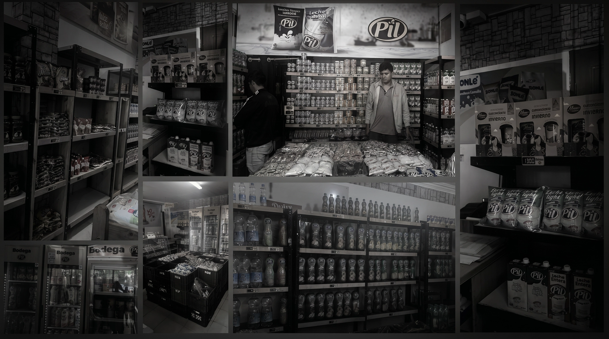
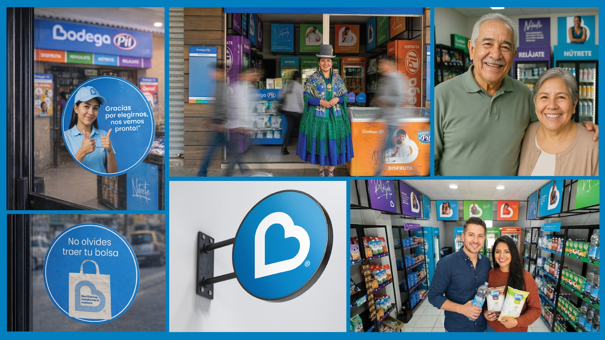
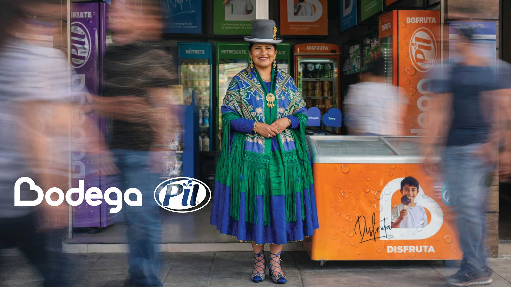

Cuando una marca necesita reconectar con su gente
Shopper-centric · Neighbourhood retail
Reimaginamos junto al equipo de PIL la experiencia en tienda para convertir cada interacción en una oportunidad de construir marca, generar preferencia y potenciar el valor del punto de venta como experiencia.
Transformamos una experiencia de compra tradicional en una experiencia más humana, estratégica y alineada con el comportamiento real del consumidor, integrando branding, shopper marketing y diseño retail bajo una visión centrada en la experiencia.


Las tiendas existían, pero necesitaban vida, alma y corazón.
Visual noise · No category structure · Confusion
La identidad anterior usaba colores apagados, texturas de madera artificial y tipografía rústica para evocar un ambiente de "bodega tradicional". En la realidad, este enfoque creaba varios problemas:
- Ruido visual en espacios retail pequeños
- Falta de estructura clara de categorías de producto
- Dificultad para que los tenderos organicen el inventario
- Confusión para los compradores que buscan productos rápidamente
Las tiendas operaban, pero la experiencia de marca estaba fragmentada.

La estrategia nace de una profunda investigación de campo
Store visits · Shopkeeper interviews · Bolivia
Para entender el problema real, realicé investigación de campo en los principales ejes comerciales de Bolivia. A través de visitas a tiendas y entrevistas con tenderos, quedó claro que el problema no era solo estético, sino también estructural.
Si el shopper está confundido, la marca está perdiendo
Two users · One solution
Necesita claridad visual, guía de categorías y una experiencia retail agradable. La solución debía facilitarle encontrar lo que busca sin confusión.
Necesita orden detrás del mostrador, almacenamiento eficiente de productos y acceso rápido al inventario para operar con fluidez.
El key insight fue simple: la marca necesitaba organizar la tienda antes de intentar decorarla.
"El corazón como símbolo universal. De la emoción al nombre: B de Bodega." El origen del concepto — Bodega PIL
Del rusticismo artificial al reconocimiento vibrante
Symbol · Color · Emotion
La identidad evolucionó desde una estética rústica artificial hacia una paleta de colores más brillante y energética, creando un entorno retail alegre que refleja el consumo cotidiano y la accesibilidad del barrio.
El origen del símbolo: tres lecturas en un solo elemento
El vínculo emocional con los consumidores. PIL, presente en hogares bolivianos por décadas.
El corazón se transforma en la letra "B". Funcional y emocional al mismo tiempo.
El gesto de formar un corazón con las manos: tendero, shopper, barrio.
Cuando las categorías hablan claro, los productos venden más rápido
Visual categories · Navigation · Order
Una de las mayores oportunidades fue organizar la gran variedad de productos en un sistema de categorías estructurado. Se crearon categorías visuales claras para guiar a los compradores y ayudar a los tenderos a mantener el orden.
- Mayor visibilidad de producto
- Navegación más fácil en tiendas pequeñas
- Organización de inventario simplificada
- La marca se convirtió en una guía dentro de la tienda

En tiendas pequeñas, cada centímetro importa
Space · Refrigeration · Vertical display
Dado el espacio limitado en las bodegas de barrio, el diseño de tienda necesitaba priorizar la funcionalidad. Una decisión central fue transformar las unidades de refrigeración en el eje visual principal de la tienda, funcionando como estantes de exhibición congelados donde los compradores pueden localizar fácilmente los productos clave.
Esto permitió a la marca organizar la tienda verticalmente mientras maximizaba la visibilidad del producto.

Shopper Insight, Visibility & Experience
Los tres pilares detrás de la transformación de Bodega PIL.
Una estrategia donde arquitectura de categorías, claridad visual, navegación de productos y experiencia en punto de venta trabajan de forma integrada para crear espacios más visibles, relevantes y conectados con el shopper.
El resultado fue una experiencia de marca más consistente y memorable, alineada con los objetivos comerciales del negocio y orientada a fortalecer la preferencia de marca en el entorno retail, contribuyendo positivamente al ROI esperado del proyecto.
Cuando todos trabajamos alineados, los resultados son sorprendentes
- Arquitectura de categorías
- Shopper marketing
- Claridad visual en tienda
- Navegación estratégica de productos
- Humanización del punto de venta
- Unificación del lenguaje visual y experiencial
- Diseño centrado en comportamiento del shopper
El desarrollo e implementación de la transformación de Bodega PIL fue posible gracias al trabajo conjunto entre las áreas de marketing, trade y ventas, alineando estrategia, ejecución y experiencia en punto de venta.
Marketing & Trade
- Laura Lozano — Gerente de Marketing y Trade
- Paola Escobar — Marketing Trade
Equipo de Trade & Ventas
- Inna Villegas
- José Miguel Torres
- Luis Fernando Aguilera
- Sara Blanco
- Gabriel Claure
Gracias al trabajo coordinado entre estrategia, trade y operación comercial, el proyecto logró construir una experiencia retail más coherente, visible y alineada con el comportamiento real del shopper.